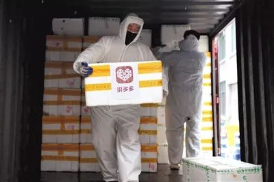
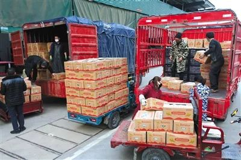
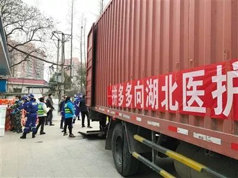

此后如竟没有炬火 我便是唯一的光：一周组建落地的网络志愿者们
原文链接 备份链接 2020年1月22日，一个叫A2N的互联网志愿者群体发布了一份长达4000多字的辟谣文稿，当时，街上的人大多还没有戴起口罩，有人在慌乱中买回成堆的板蓝根，还有人相信喝酒、抽烟能够抵御病毒……两天后，这份辟谣文稿的阅览量 …
新冠肺炎疫情下，重疫区湖北面临较为严重的医疗和生活物资短缺现象，口罩、防护服、护目镜、新鲜瓜果蔬菜都需要外界支援，多数企业伸出援手帮助疫区渡过难关。然而，在形势危急的当下，如何迅速调取物资并送往一线投入使用成为关键。
电商平台凭借自身原有的供应链和平台优势，针对疫区需求直接采取点对点援助，第一时间给予物资支持。此外，封路、物流运输受阻导致农产品流通成问题，平台试图在农产品销路受损的同时搭建采、购通路并给予一定补贴，让辛苦一年的农民不受损，让城里的居民有菜吃。

▲2月2日，湖北省武汉市第六人民医院，工作人员正在搬运拼多多捐赠的蔬菜水果等物资。
━━━━━
一名司机和一车果蔬
大年初十晚上六点，一声巨响从车后传来，这是李超第二次爆胎了。当时，他距离湖北荆门协和京山医院只有几十公里，车上装的是拼多多向该医院捐赠的物资，自新冠肺炎疫情发生以来，这家医院极度缺乏蔬菜水果，他这一车货正是送去救急的。
李超是湖北省襄阳市的一名货车司机，疫情发生后，每天开车往乡下运送饲料给养殖场。大年初十早上10点左右，他接到一个电话，希望能协调一台车和一个司机，“赶紧运一些新鲜蔬菜水果去荆门协和京山医院，是接收新型冠状病毒肺炎患者的定点医院。”
当时，身旁的妻子没有说话，但李超看得出来她不愿意让他出这趟车。39岁的李超家里有70岁的父母，还有一双十多岁的儿子，“万一带病毒回来传给老人和孩子就不好了”。迟疑了一两秒后，李超答应了下来，并打算亲自去送这批蔬果。
李超先去货场上货，这是一批拼多多定向捐给协和京山医院的新鲜蔬菜水果，迅速装好后便出发了。出城的时候不到12点，李超直接往协和京山医院赶。虽然做了十几年大货车司机，但平时都是跑省外的单子多，至今没去过一次京山，这是一趟完全陌生的旅程。不过，出襄阳没多久高速路就封了，他只能绕国道走，还经历了右后副车胎爆胎、换胎。
然而，就在转向高速路、离目的地越来越近时，另一边的车胎也在一声巨响中爆了。这时候，李超彻底慌了：“听说医院里新鲜蔬菜紧张，拼多多好不容易募集到这些水果蔬菜，送慢了，太对不住大家。”不过，好在医院那边联系师傅解决了这一障碍，晚上8点多，李超和那辆载满新鲜蔬果的货车终于到达目的地。
“医院组织了不当班的医生护士一起来帮助卸货，我看到他们那一瞬间，眼泪都要掉下来。他们白天忙着接诊医治病人，晚上还要帮我卸货，真的非常感动。”
拼多多抗疫工作组组长傅正表示，“医护人员和病人处在危险中，新鲜蔬菜水果是保障他们营养战胜疫情的必需品，但平时特别简单的事情，在这个时候做起来却非常困难，主要是筹措物资和运输很难，正是有了像李超这样的司机，我们这些物资才能抵达最需要的人那里。”据傅正介绍，疫情发生后，拼多多紧急采购了超过100吨的新鲜蔬菜水果，通过物流合作伙伴，直接送抵湖北七市16家医院。

▲2月2日，湖北襄阳竹叶山市场，工作人员正在把拼多多从各地筹集的农产品物资运送到抗“疫”一线。
━━━━━
拨一通电话，换来一批口罩
“你们有外科口罩吗？哪怕几十个也要。”1月31日，拼多多“抗疫工作组”成员狄拉克接到了这通来自湖北黄冈的求助电话。
打电话的是王斌，来自湖北省黄冈市新冠肺炎防控指挥部。整个春节期间，王斌每天都在四处寻找医疗防护物资。当时，全国人民关注的焦点还是武汉，然而武汉封城后几十万人返回黄冈，但医疗防护物资极度缺乏，没有装备如何打仗？
“我每天睁开眼第一件事，就是想怎么搞到医用口罩和防护服，我们这边库存剩下不多，没有这个医院开不了门。”王斌说。而在当时，为了节省防护服，黄冈的医务人员只能9个小时不吃饭、不喝水，一旦上厕所，一套防护服就废了。
王斌向拼多多求助后不到一天，1月31日晚，拼多多就向黄冈启运了首批6万多只口罩和2万只医用手套。这批货刚运抵黄冈，就在指挥部的统一调配下，分发至黄冈版“小汤山”——黄冈市中心医院大别山区域医疗中心等定点医院的一线医护人员手中。
事实上，物资紧缺的不止黄冈。疫情发生后，拼多多接到了武汉、黄冈、天门、襄阳、荆门、孝感、宜昌等湖北七市急缺物资的求助。此后，拼多多向湖北七市16家医院捐赠了100万只外科医用口罩，20万双医用手套，30吨德国消毒液。而截至目前，拼多多已累计响应62家来自各地组织和机构的求助需求。
狄拉克说：“这些物资全部是拼多多采购，通过物流合作伙伴，直接送达援助对象。这种点对点不通过第三方的捐助方式，在当前状态下效率较高，可以更快满足求助单位需要。”
据了解，在医疗物资全国普遍紧缺的情况下，筹措物资只是第一个困难。狄拉克表示，疫区情势紧急、情况复杂，困难层出不穷。“在救援前期，主要的困难是物资短缺，而现在物流也越来越困难，很多地方封了路，前线必须是有资质的运输公司才能进入。”他说。尽管困难重重，在物流合作伙伴支持下，拼多多尽最大努力，把筹措到的每一个医用口罩送抵最需要的医护人员手里。
在此次抗疫中，拼多多的捐赠不仅限于医疗物资。新京报记者了解到，拼多多还联合浙大共同设立1亿元“病毒感染性疾病防控基金”，这笔捐赠款项将专项用于支持病毒感染及呼吸道传染性疾病防治，特别是此次新冠肺炎疫情支援保障和科学研究。

▲2月3日，拼多多捐赠的6吨蔬菜水果运至湖北襄阳老河口市疾控中心。
━━━━━
一位农民卖了他的两吨洋葱
王东（化名）是云南红河州建水县农民，春节前他计划着卖掉两吨紫皮洋葱，之后就可以准备种水稻了。但他没有想到的是，数千里之外的湖北新冠肺炎疫情也能影响到他这个高原农民的生计。据统计，受新冠肺炎疫情影响，建水县100吨洋葱滞销，农民将为此损失200万元。
一边是像王东一样的农民，他们辛苦种下的洋葱卖不掉；在另一边，由于农产品销路受损，且受到封路、物流不便等影响，城市里的居民遭遇了买菜难。于是，在得到建水洋葱滞销农户焦虑的信息后，拼多多将建水洋葱纳入“抗疫农货”补贴扶持计划。
狄拉克表示，“很多农产区‘一手要抓生产，一手要抓防疫’，但因为销路受阻，不少农民积极性受挫，相关生产也受到了很大影响。”自1月底以来，不断有农业专家和学者联系拼多多，希望能够共同解决特殊时期的农产品产销问题，将疫情对农业生产的冲击降至最低。
为保障特殊时期的农产品产销对接，自2月3日起，拼多多陆续推出了一系列中小规模农产品专项活动。
“这期间主要是做三件事情，一是协同平台的新农人做商品清单，梳理农产区尤其是贫困地区的农产品库存和质量状况，将亟须打通销路的农产品‘往前推’；二是请求各地政府和相关部门协调，对此类农产品开辟绿色通道；三是统筹顺丰、中国邮政等物流资源，确保新鲜的农产品能够直达消费者手中。”
2月10日，拼多多正式上线“抗疫农货”专区，目前，该专区已覆盖全国近400个农产区包括230多个国家级贫困县近28万个商品。针对专区商品，拼多多设置了5亿元的专项商品补贴，同时，每单农产品快递还将享有2元的特殊物流补贴。
“受益于中国农业崛起的拼多多，在当前这个特殊时期，我们将尽力去帮助每一个农民，把他们的损失降到最小。”狄拉克表示。
新京报记者 张晓荣 本版摄影 李康
点击下图进入”全国新型冠状病毒感染肺炎实时地图“

*值班编辑 花木南*


原文链接 备份链接 2020年1月22日，一个叫A2N的互联网志愿者群体发布了一份长达4000多字的辟谣文稿，当时，街上的人大多还没有戴起口罩，有人在慌乱中买回成堆的板蓝根，还有人相信喝酒、抽烟能够抵御病毒……两天后，这份辟谣文稿的阅览量 …
原文链接 备份链接 涂俊南（大家喜欢叫他小涂，乐队 “丢莱卡” 的主唱）的捐助日志在大年三十那天晚上出现在朋友圈。如往年，他没回去跟家里人过春节，独自留在北京。他原本计划三月份回去南昌陪陪父母，因为疫情爆发，今年大概是回不去了。 一个人在 …
原文链接 备份链接 我也是个普通人，也会恐惧。但我是一名医务工作者，同时是一名党员；我们黄冈的疫情是全国城市里除武汉之外最重的几个之一，这样的困难情况下，我们不去，谁去？必须要坚持，一定要挺住。 口述 | 陈 林 整理 | 王 煜 我是湖 …
原文链接 备份链接 医院人员领取志愿者送的医疗物资。受访者供图 文 | 李晓芳 编辑 | 胡大旗 新型冠状病毒肺炎疫情扩大后，湖北省内的医院医疗物资告急。从1月23日开始，很多医院自行发布物资募捐公告。几乎同一时间，各种民间力量行动起来， …
原文链接 备份链接 点击上图，一键下单** 【武汉现场：抗击新冠肺炎】** 记者 | 吴琪 我从没见过这样的汉口火车站。 1月23日，大年二十九。上午8点40分、50分，墙上的时钟往前走，随着一拨拨人上车，庞大的候车大厅，像被一支巨大的 …